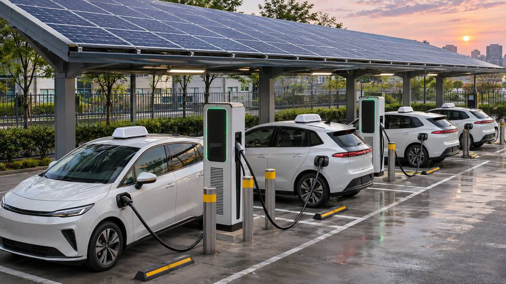

전기택시 전환 협약, 2035년까지 새 택시 전기차로

전국 택시 22만9,000대 가운데 전기택시는 17%다. 기후부·국토부와 두 택시 연합회가 5년 협약으로 충전시설·융자·전환지원금을 맞춘다.
2035년까지 새로 사거나 빌려 들이는 택시를 원칙적으로 모두 전기차로 바꾸는 목표를 정부와 택시업계가 함께 세웠다. 기후에너지환경부와 국토교통부, 전국택시운송사업조합연합회, 전국개인택시운송사업조합연합회는 11월 24일 오후 서울 중구 국토발전전시관에서 '택시 전동화 촉진을 위한 업무협약'을 맺는다고 이날 밝혔다. 네 기관은 앞으로 택시의 전기차 전환 방향을 주기적으로 함께 논의한다.
올해 상반기 전국에 등록된 택시는 약 22만9,000대이고, 이 가운데 전기택시는 약 3만9,000대(17%)다. 최근 3년 동안 해마다 평균 약 3만5,000대의 택시가 새로 등록됐다. 택시업계 집계로 택시의 평균 주행거리는 일반 승용차의 5.8배(개인택시)에서 7.3배(법인택시)에 이른다. 그만큼 한 대를 바꿀 때 줄어드는 온실가스와 배출가스가 크다는 것이 두 부처의 설명이다.
협약서에 따라 기후부는 전기택시 전환과 충전 편의를 위한 정책을 찾고 행정·재정 지원을 맡는다. 붙임 행사 계획은 그 예로 차고지 등의 급속충전시설 확충, 법인 전기택시 융자, 전환지원금을 들었고, 국토부 몫으로는 전기차 충전보조금을 적었다. 법인택시 연합회는 전기택시에 맞는 운영체계를 마련하고, 개인택시 연합회는 운전자들의 안전한 운행 방식 이해와 인식 개선을 맡는다.
올해 전기택시는 중·대형 전기승용차 최대 국비 보조금에 250만 원을 더 받는다. 올해 새로 생긴 전환지원금(출고 3년이 지난 내연차를 폐차하거나 팔고 전기차를 살 때 주는 돈)은 최대 100만 원이다. 협약은 서명한 날부터 5년 동안 효력을 가지며, 그 기간에는 어느 한쪽이 서면으로 해지를 알리지 않는 한 유지된다.
시민에너지 관점
택시는 하루 종일 도시를 달리는 차라, 한 대를 바꾸는 효과가 승용차 여러 대를 바꾸는 것과 같다. 차값과 충전 시간이 걸림돌이라는 업계의 걱정은 차고지 급속충전기와 법인 융자처럼 협약에 적힌 지원이 실제 예산으로 이어질 때 풀린다. 다만 충전하는 전기가 석탄·가스에서 오면 감축 효과는 반쪽에 그친다. 택시 차고지와 공영 충전소 지붕에 주민과 협동조합이 함께 소유하는 태양광을 얹어, 지역에서 만든 전기로 택시가 달리게 하자.
출처: 기후에너지환경부·국토교통부 2026-11-24 보도자료 「전기택시 전환 활성화 위해 기후부-국토부-택시업계 맞손」(붙임 행사 계획·협약서 전문) 원문 보기
출처: 기후에너지환경부 2026-02-05 정책뉴스 「2026년 전기차 구매보조금 더 챙겨가세요!」 원문 보기
출처: 기후에너지환경부 2026-01-29 정책뉴스 「2026년 신설 무공해차 보급정책 ④ 전환지원금」 원문 보기